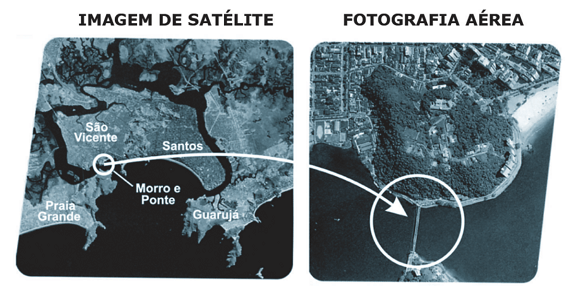
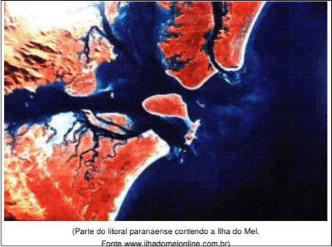
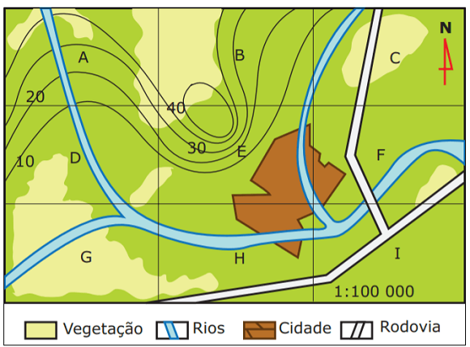

Conteúdo: Sensoriamento remoto, imagens de satélite, Cartografia digital, Geoprocessamento.
Objetivo: Compreender o papel estratégico da Cartografia diante da novas tecnologias de informações Geográfica s (SIGs).
Questão 01
O monitoramento por satélite e o GPS (Sistema de Posicionamento Global) são inovações tecnológicas atualmente usadas por órgãos governamentais, agricultura, empresas, pessoas etc. Sobre essa questão, escreva verdadeiro (V) ou falso (F) para os itens abaixo e assinale a alternativa correta:
I. O GPS é um Sistema de Posicionamento Global constituído por dezenas de satélites que emitem sinais de rádio captados por aparelhos especiais em qualquer ponto da superfície da Terra.
II. O GPS indica ao usuário sua localização em termos de latitude, longitude e altitude.
III. Na agricultura, essas tecnologias podem ser utilizadas a fim de que se obtenha maior produtividade com custos menores.
IV. Essas inovações tecnológicas permitem, por exemplo, detectar e acompanhar a direção e o deslocamento de queimadas e avaliar prejuízos em áreas atingidas por secas ou inundações.
a) VFVV.
b) VVVF.
c) FVVV.
d) VVVV
e) VFVF
Comentário:
I. Incorreta. O GPS só permite a localização por aparelhos em pontos que há a cobertura de ondas de rádio transmitidas por torres instaladas em alguns pontos específicos.
II. Correta. Ao se visualizar um aparelho de GPS, é possível saber a altitude, longitude e a altitude em que a pessoa se encontra.
III. Correta. Através das imagens de satélite, podem ser fornecidos dados acerca da área de plantio e realizar previsões meteorológicas sobre o clima de uma determinada localidade, facilitando o planejamento na agricultura.
IV. Correta. As imagens de satélite podem fornecer informações através de imagens que registram os índices de queimadas, bem como sobre o clima e áreas devastadas pela seca ou pelas chuvas.
Questão 02
(FUVEST 2009)

Considere os exemplos das figuras e analise as frases abaixo, relativas às imagens de satélite e às fotografias aéreas.
I. Um dos usos das imagens de satélites refere-se à confecção de mapas temáticos de escala pequena, enquanto as fotografias aéreas servem de base à confecção de cartas topográficas de escala grande.
II. Embora os produtos de sensoriamento remoto estejam, hoje, disseminados pelo mundo, nem todos eles são disponibilizados para uso civil.
III. Pelo fato de poderem ser obtidas com intervalos regulares de tempo, dentre outras características, as imagens de satélite constituem-se em ferramentas de monitoramento ambiental e instrumental geopolítico valioso.
Está correto o que se afirma em:
a) I, apenas.
b) II, apenas.
c) II e III, apenas.
d) I e III, apenas.
e) I, II e III.
I. Correta. A escala pequena é usada para cartografar áreas grandes onde há grande redução do espaço real e poucos detalhes. A escala grande é usada para cartografar áreas pequenas, onde há redução menor do espaço real, portanto, são mais ricas em detalhes. Mapas temáticos são produtos cartográficos que enfocam determinado fenômeno, tais como população, vegetação, uso do solo e outros.
A carta topográfica mostra os desníveis do terreno, a rede hidrográfica, a altitude etc. As imagens obtidas por satélites captam a irradiação emitida pela superfície terrestre, trabalhando em termos de faixas da radiação. Como os sensores dos satélites conseguem captar a irradiação emitida por uma área extensa, permitem a elaboração de mapas de escala pequena, o que na foto aérea seria inviável, posto que nesta, o sensor é acoplado às aeronaves que tiram fotos oblíquas sobrepostas de áreas menores, permitindo fazer mapas de grande escala.
Como as fotos são tiradas em posição oblíqua e sobrepostas, por meio da estereoscópica é possível obter dados sobre a altitude dos objetos sobre a superfície e, portanto, fazer mapas topográficos.
II. Correta. Os produtos de sensoriamento não estão todos disponíveis para o uso civil porque as áreas consideradas estratégicas ou de segurança ficam restritas somente ao acesso dos governos, por exemplo: as imagens de embaixadas, sedes de governos, usinas nucleares e presídios obtidas por satélite não são disponibilizadas à sociedade civil.
Questão 03
“Hoje, o sensoriamento remoto por meio de satélites representa o mais importante e eficiente recurso tecnológico de observação da Terra, permitindo rapidez e precisão nos processos de levantamento de dados e mapeamentos.”
(COELHO, Marcos de Amorim; TERRA, Lygia. Geografia Geral: o espaço natural e socioeconômico. 2001, p.30)
A esse respeito, leia as afirmativas abaixo.
I – O sensoriamento remoto é um recurso técnico para ampliar os sentidos naturais do homem.
II –O sensoriamento remoto pode ser definido, de uma maneira ampla, como sendo a forma de se obter informações de um objeto ou alvo, sem que haja contato físico com o mesmo.
III – No sensoriamento remoto, as informações são obtidas utilizando-se a radiação eletromagnética, geradas por fontes naturais como o Sol e a Terra, ou por fontes artificiais como, por exemplo, o Radar.
Assinale a alternativa correta.
a) Somente a afirmativa I está correta.
b) Somente a afirmativa III está correta.
c) Todas as afirmativas estão corretas.
d) Somente as afirmativas I e III estão corretas.
e) Somente a afirmativa II está correta.
Questão 04
A importância do Geoprocessamento reside no tratamento de imagens para a produção de mapas, cartas, projeções cartográficas e recolher dados em forma de gráficos, quadros e tabelas sobre os diversos elementos da superfície terrestre. Sobre o Geoprocessamento, assinale a alternativa incorreta
a) O uso de softwares e equipamentos tecnológicos é imprescindível para a operação do Geoprocessamento.
b) O uso de softwares e equipamentos tecnológicos é imprescindível para a operação do Geoprocessamento.
c) O uso de softwares e equipamentos tecnológicos é imprescindível para a operação do Geoprocessamento.
d) O Geoprocessamento pode ser muito útil para serviços de espionagem, uma vez que as imagens de satélite permitem visualizar, em detalhes, qualquer ponto da superfície terrestre
a) Correta. O Geoprocessamento está diretamente vinculado à aparelhagem tecnológica informacional, de modo que o uso de softwares é extremamente necessário.
b) Correta. A aerofotogrametria consiste na produção de fotografias aéreas que podem ser utilizadas para a produção de mapas e cartas.
c) Incorreta. Na criação de mapas também pode ser utilizadas fotografias aéreas e, inclusive, imagens terrestres.
d) Correta. Um dos principais usos das ferramentas do Geoprocessamento é o militar.
Questão 05
O sensoriamento remoto é um recurso técnico para ampliar os sentidos naturais do homem. É um dispositivo ou equipamento (câmara fotográfica, radar, satélite) que capta e registra, sob a forma de imagens, a energia refletida ou emitida pelas áreas, acidentes, objetos e acontecimentos do meio ambiente, incluindo os acidentes naturais e culturais.
OLIVEIRA, Cêurio. In: COELHO, Amorim. Geografia geral: o espaço natural e socioeconômico. São Paulo: Moderna, 1992.
Com base no texto e nos conhecimentos sobre sensoriamento remoto e representações cartográficas, é correto afirmar:
a) As fotografias feitas por satélites dispensam todos os tipos de cartas geográficas temáticas.
b) A totalidade da superfície terrestre pode ser visualizada através de uma única foto feita por satélite..
c) As imagens processadas de radar oferecem detalhes milimétricos, como a detecção de pragas nas lavouras..
d) O mapa-múndi é a mais perfeita de todas as representações cartográficas, por possuir uma grande escala e apresentar o espaço com todos os detalhes..
e) As vantagens da fotografia aérea são, entre outras, a boa orientação espacial e o elevado nível de precisão e rapidez, permitindo amplo campo de trabalho aos geógrafos.
Questão 06
(2021) Associe as colunas relacionadas com geotecnologia à esquerda com a coluna da cartografia à direita.
Assinale a alternativa correta que correlaciona as duas colunas:
a) 1, 2, 3, 5, 4.
b) 5, 3, 4, 2, 1
c) 2, 4, 3, 5, 1.
d) 3, 5, 2, 1,4.
Questão 07
A cartografia utiliza a técnica de sensoriamento remoto na análise e interpretação do espaço geográfico. Das alternativas abaixo uma indica corretamente o material utilizado por essa técnica. Assinale-a:
a) Cartas náuticas, cartas marítimas e radares
b) Fotos aéreas, imagens de radar e de satélites
c) Telescópio, satélites e altímetros.
d) d) Astrolábio, bússola e clinômetro.
e) Termógrafo, bússolas e curvímetro
O sensoriamento remoto é aquele que é realizado por instrumentos distantes do local que se pretende medir, e tem relação direta com os fenômenos da radiação eletromagnética.
Com isto em mente, são exemplos de instrumentos deste tipo a foto aérea, as imagens de radar e de satélites, uma vez que elas são realizadas por instrumentos bem distantes do observado e interagem com fenômenos deste tipo.
Questão 08
A origem do sensoriamento remoto vincula-se ao surgimento da fotografia aérea. Assim, a história do sensoriamento remoto pode ser dividida em dois períodos: um, de 1860 a 1960, baseado no uso de fotografias aéreas, e outro, de 1960 aos dias de hoje, caracterizado por uma variedade de tipos de fotografias e imagens.
O sensoriamento remoto é fruto de um esforço multidisciplinar que integra os avanços da Matemática, Física, Química, Biologia e das Ciências da Terra e da Computação. A evolução das técnicas de sensoriamento remoto e a sua aplicação envolvem um número cada vez maior de pessoas de diferentes áreas do conhecimento.
Tendo-se em vista a importância do sensoriamento remoto para as mais diversas atividades humanas, considera-se como principal objetivo dessa atividade
a) interpretar, visualizar e apontar os principais fluxos monetários internacionais.
b) monitorar as principais atividades correlacionadas à tectônica global.
c) obter imagens e outros tipos de dados da superfície terrestrec
d) acompanhar a dinâmica das principais vias de circulação aérea.
e) diagnosticar as migrações intrarregionais, apontando as principais causas de emigração.
Questão 09
(UEL 2010)

Sobre a obtenção e interpretação de imagens, é CORRETO afirmar
a) Dentre os diversos objetivos da utilização do sensoriamento remoto destaca-se a obtenção e análise de informações sobre materiais, objetos ou fenômenos na superfície da Terra, a partir de dispositivos situados a distância
b) O sensoriamento remoto é uma sofisticação tecnológica entendida como avanço técnico que realiza mapeamento e convenções cartográficas de imagens adquiridas por sensores próximos de seus alvos.
c) Na utilização do sensoriamento remoto, os dispositivos de coleta de dados têm função de digitalizar a informação proveniente dos materiais, objetos ou fenômenos terrestres, para posterior processamento e interpretação possível de ser realizado por qualquer pessoa.
d) As atividades de sensoriamento remoto excluem o processamento digitalizado de imagens, pois a técnica por si mesma fornece instrumentos que facilitam a identificação e extração de informações para posterior interpretação.
e) A transformação de imagens em dados que possam representar informações úteis está inteiramente realizada, uma vez que o sensoriamento remoto descarta a necessidade do especialista humano para identificar cada uma das classes de objetos passiveis de reconhecimento
Questão 10
(Enem 2000) Um determinado município, representado na planta abaixo, dividido em regiões de A a I, com altitudes de terrenos indicadas por curvas de nível, precisa decidir pela localização das seguintes obras:
1. Instalação de um parque industrial.
2. Instalação de uma torre de transmissão e recepção.

Considerando impacto ambiental e adequação, as regiões onde deveriam ser, de preferência, instaladas indústrias e torres, são, respectivamente
a) E e G
b) H e A
c) I e E
d) B e I
e) E e F
Comentário: As curvas de nível mostram lugares altos ou baixos, quando mais íngreme for a altitude de um local mais próximas as linhas de topografia estarão. Para a construção de um parque industrial é primeiro necessário que o lugar seja plano, sem a necessidade de retirada de morros e também próximos a estrada para que haja a possibilidade de escoamento do produto produzido. Já as torres normalmente estão localizadas em lugares com uma altitude relevante, para que o sinal seja mais amplo e com melhor funcionamento sem muitas barreiras que interfiram na propagação das ondas.